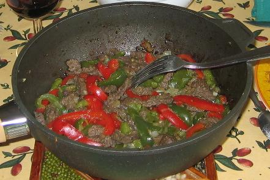

Recette n°94 : lamelles de
boeuf aux deux poivrons

Ingrédients : (pour 4
personnes)
- 200 g de poivron vert
- 200 g de poivron rouge
- 200 g d'oignon
- 4 cuillers à soupe d'huille d'olive
- 1 bouquet de coriandre ou de ciboulette selon goût
- 500 g de boeuf tendre (filet par exemple)
- 400 g de riz parfumé ou basmati
- 4 cuillers à soupe d'huile de sésame
- une pincée de curry
- sel et poivre selon goût
Préparation :
- laver, épépiner et découper en lanières
les poivrons
- éplucher l'oignon et l'ail, et le hacher
- hacher la coriandre ou la ciboulette, selon goût
- mettre le riz à cuire dans 2 litres d'eau bouillante
salée et additionnée du curry
- découper le boeuf en fines lamelles, saler et poivrer
- dans une sauteuse ou un wok, faire revenir le boeuf à feu vif
dans l'huile pendant 2 minuetes en reemuant sans cesse
- ajouter poivrons, ail et oignon, et faire cuire encore 10 minutes en
remuant souvent
- servir chaud avec le riz égoutté
Observations :
- recette préparée le 22 octobre 2006 à Rennes
comme dîner pour F et moi ; excellente !